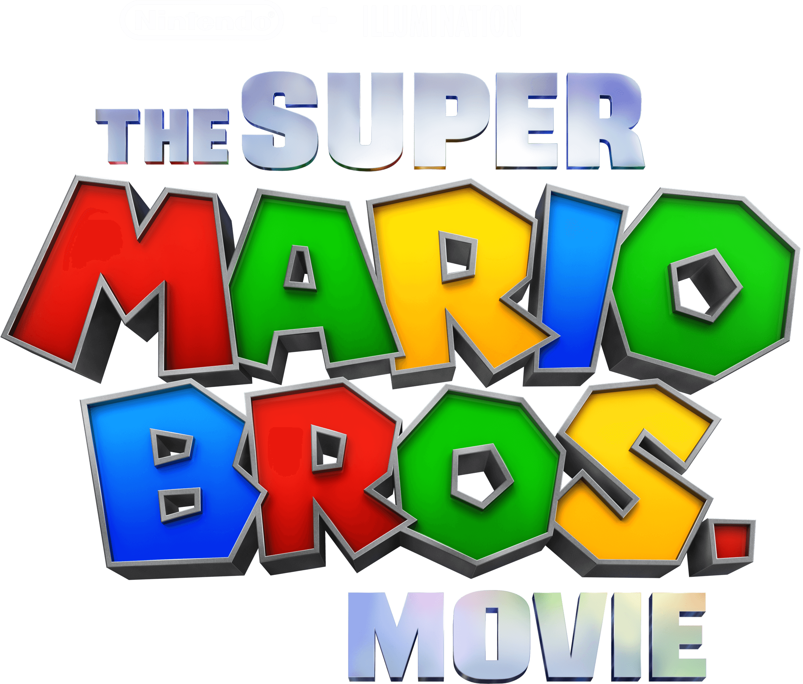

Super Mario Bro: La Película
The Super Mario Bros. Movie
Oficial Trailer
The Super Mario Bros. Movie
Final Trailer
The Super Mario Bros. Movie
Teaser Trailer
Reseñas
TOMATÓMETRO
Consenso de Críticos: La espectacular animación, el cariñoso homenaje a los videojuegos
y un
carismático elenco hacen de este filme una aventura imperdible para las audiencias en general, pero
en particular para los fans.
Calificación de Usuarios: Calificación Promedio: 4.4/5